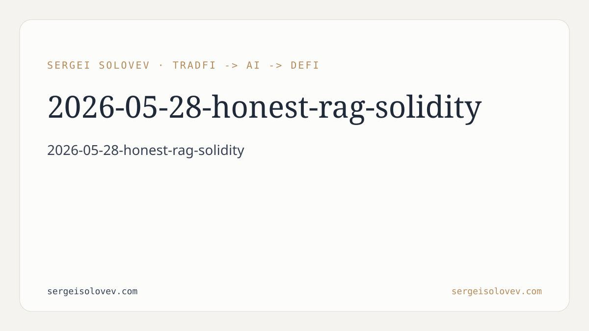

```markdown
---
title: "Honest-RAG-Solidity: Cutting Hallucinations in Smart Contract Vulnerability Detection"
date: 2026-05-28
slug: honest-rag-solidity
meta_description: "RAG framework for Solidity vulnerability detection: lower hallucination rates than zero-shot LLMs, full coverage of reentrancy, overflow, and access-control bugs."
tags: [smart-contract-security, RAG, Solidity, LLM, vulnerability-detection]
canonical_doi: 10.6084/m9.figshare.32141182
---
Ask a frontier LLM to audit a Solidity contract and it will produce an answer. It will sound authoritative. It will cite line numbers, name bug classes, and recommend mitigations. It will also, at a non-trivial rate, be wrong in ways that are hard to catch without already knowing the answer. That is the core tension in applying large language models to smart contract security: the same fluency that makes them useful makes their errors expensive. In DeFi, an undetected reentrancy or a missed integer overflow is not a UX bug — it is a treasury event. The economic cost of a single false negative can exceed the entire budget of a security review. Zero-shot LLM analysis, evaluated honestly, produces too many of those false negatives, and too many false positives that waste auditor time. This paper is about fixing that without sacrificing coverage.
The core idea is straightforward: instead of asking a language model to reason about vulnerability patterns from parametric memory alone, we ground every inference step in a retrieved corpus of verified contracts and documented exploit patterns. This is retrieval-augmented generation (RAG) applied to a security domain where the cost of hallucination is asymmetric — missing a bug is worse than flagging one that turns out to be benign.
The corpus is the critical design decision. We curate a collection of Solidity contracts with known vulnerability labels — drawn from post-mortem analyses of real exploits, established audit databases, and canonical test suites — alongside a parallel set of verified-clean contracts for contrast. Every document in the corpus is structured to give the retrieval layer something to work with: vulnerability class, affected pattern, exploit trace, and fix. This is not a raw dump of GitHub repositories. The quality of RAG output is bounded by corpus quality, and an uncurated corpus of Solidity code contains too much noise to be useful for fine-grained security reasoning.
At inference time, the pipeline takes an input contract, constructs a query encoding the structural and semantic features of the code under analysis, and retrieves the most relevant corpus entries. The retrieved context — verified vulnerable patterns, corresponding clean counterparts, and exploit descriptions — is prepended to the LLM prompt alongside the target contract. The model is then asked to reason about vulnerability presence given explicit grounding, rather than from general training knowledge. This shifts the model's epistemic position: instead of generating an answer about smart contract security in the abstract, it is being asked to compare a specific contract against specific retrieved evidence.
The three bug classes evaluated — reentrancy, integer overflow, and access-control violations — were chosen because they account for the majority of historical DeFi losses and because they have sufficiently distinct syntactic and semantic signatures to test whether the retrieval step is doing real work. A model that genuinely retrieves and attends to relevant patterns should perform differently on these classes than a model relying on surface-level heuristics, and the results bear that out. Hallucination rates — defined here as confident incorrect classifications not grounded in any retrieved evidence — drop substantially relative to zero-shot baselines. Detection coverage, measured as recall over the labeled vulnerable set, is maintained. The framework does not trade recall for precision by becoming conservative; it reduces errors by becoming better-calibrated.
For DeFi practitioners operating at the intersection of production security and AI tooling, the practical implication is this: zero-shot LLM auditing is not a viable substitute for grounded analysis, but that does not mean LLMs are not useful in the security workflow. The failure mode is specific. It is not that frontier models lack knowledge of Solidity vulnerability patterns — they have absorbed substantial relevant content from training data. The failure mode is that they cannot reliably distinguish between a contract that instantiates a known-vulnerable pattern and one that superficially resembles it without the exploitable condition. Retrieval provides the discriminating signal. A well-constructed corpus entry for a reentrancy exploit, including both the vulnerable and fixed versions of the relevant function, gives the model the comparison substrate it needs to make that distinction reliably.
For AI practitioners, the result is a data point in an ongoing question about where RAG adds the most value. Security auditing is a domain where ground truth is knowable after the fact — exploits either happen or they don't, vulnerabilities either exist or they don't — which makes it possible to run honest evaluations. The improvement in calibration observed here is not surprising given the mechanism, but it is worth documenting quantitatively. RAG is frequently proposed as a hallucination mitigation strategy; this work provides concrete evidence that it works in a domain where the stakes make careful evaluation worthwhile. The "honest" in the paper title is doing real work: the evaluation methodology is designed to catch the class of errors that would be invisible to a benchmark optimized for precision alone.
The secondary implication is for the architecture of AI-assisted audit tooling. The corpus is a first-class component of the system, not an afterthought. Maintaining and extending a curated vulnerability corpus — keeping it current with new exploit patterns, tagging it with sufficient metadata for effective retrieval — is ongoing engineering work, not a one-time setup cost. Teams building audit pipelines on top of LLMs should account for corpus maintenance in their operational model. A stale corpus is a degrading system.
The current evaluation is bounded by corpus coverage. The three bug classes selected are important and well-documented, but the Solidity vulnerability space is broader: flash loan interactions, oracle manipulation, governance attacks, and cross-contract call graph vulnerabilities all present retrieval challenges that were not addressed here. Retrieval quality degrades when the corpus does not contain structurally similar patterns to the input contract, and the current work does not fully characterize where that boundary lies. The curated corpus is also necessarily a static artifact — it does not automatically incorporate new exploit patterns as they emerge from the field. Extending the framework to handle dynamic corpus updates and evaluating performance on less-documented vulnerability classes are the natural next steps. There is also an open question about retrieval architecture: the current implementation uses standard dense retrieval, but security-specific structural similarity — based on control flow, call graph topology, or storage access patterns — may outperform semantic embedding similarity for certain bug classes. That comparison is work in progress.
---
```bibtex
@misc{solovev2026honestrag,
author = {Solovev, Sergei},
title = {Honest-{RAG}-{Solidity}: Retrieval-Augmented Vulnerability Detection in Smart Contracts},
year = {2026},
doi = {10.6084/m9.figshare.32141182},
url = {https://doi.org/10.6084/m9.figshare.32141182},
note = {Preprint via figshare}
}
```
```